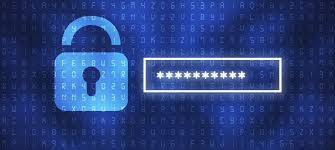

Welcome to Cyber Secure Hub, your trusted space to explore the world of ethical hacking, cybersecurity, and digital defense.
Build your skills, understand how hackers think, and learn to secure the systems that power our connected world.
From beginner guides to advanced tools — we help you stay one step ahead in the cyber world.
.png)
Protecting your digital world
In today’s connected world, your personal and professional data is constantly at risk. From phishing attacks to ransomware, hackers are always looking for ways to exploit vulnerabilities. At Cyber Secure Hub, we believe that everyone deserves a safe digital experience, whether you’re browsing the web, managing your business, or communicating online.
We focus on proactive protection, not just reactive solutions. Our platform provides you with the knowledge and tools to identify threats before they become a problem. From securing your devices to safeguarding your online accounts, we guide you step by step.
Cyber hygiene made simple: We break down complex cybersecurity concepts into simple, actionable steps. Learn how to manage strong passwords, recognize suspicious emails, and use encryption to keep your sensitive data safe.
Empowering individuals and businesses: Security isn’t just for tech experts. Our resources are designed for everyone—from students and freelancers to small businesses and large organizations. By following best practices and leveraging the right tools, you can reduce your risk and feel confident online.
Stay ahead of threats: Cyber threats evolve every day, but so do we. With regular updates, tutorials, and expert insights, Cyber Secure Hub keeps you informed and ready to defend your digital world.

Services We Offer
Real-Time Threat Alerts
Stay ahead of cyber threats with instant notifications about the latest malware, phishing attacks, and security vulnerabilities. Never be caught off guard again.
Step-by-Step Tutorials
From basic online safety to advanced cybersecurity techniques, our easy-to-follow guides help you protect your digital life with confidence.
Trusted Security Tools
Access a curated selection of antivirus software, password managers, and encryption tools—tested and recommended by cybersecurity experts.
Expert Advice & Insights
Learn from certified ethical hackers and security professionals. Get tips, strategies, and real-world insights to safeguard yourself and your business.
Why Cyber Secure Hub is best
At Cyber Secure Hub, we make cybersecurity simple, practical, and accessible for everyone. Learn from certified experts, stay ahead of evolving threats with real-time alerts, and apply easy-to-follow tips to protect your devices, accounts, and data. Whether you’re an individual or a business, our resources and community support empower you to take control of your digital safety with confidence. We are 24 hours available to protect you.